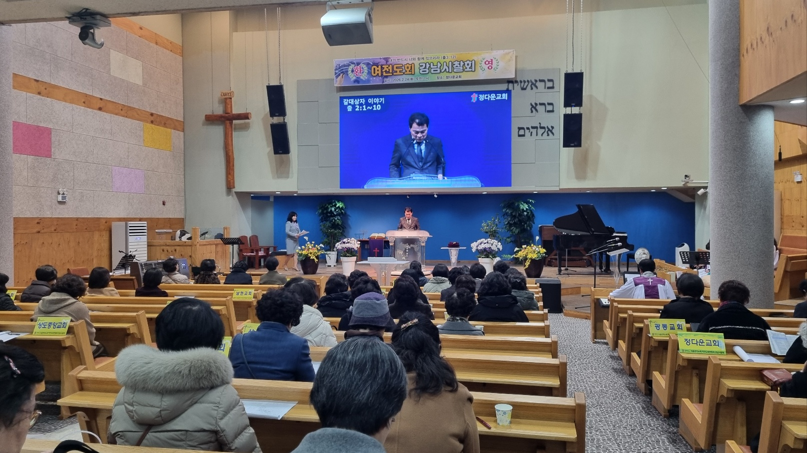
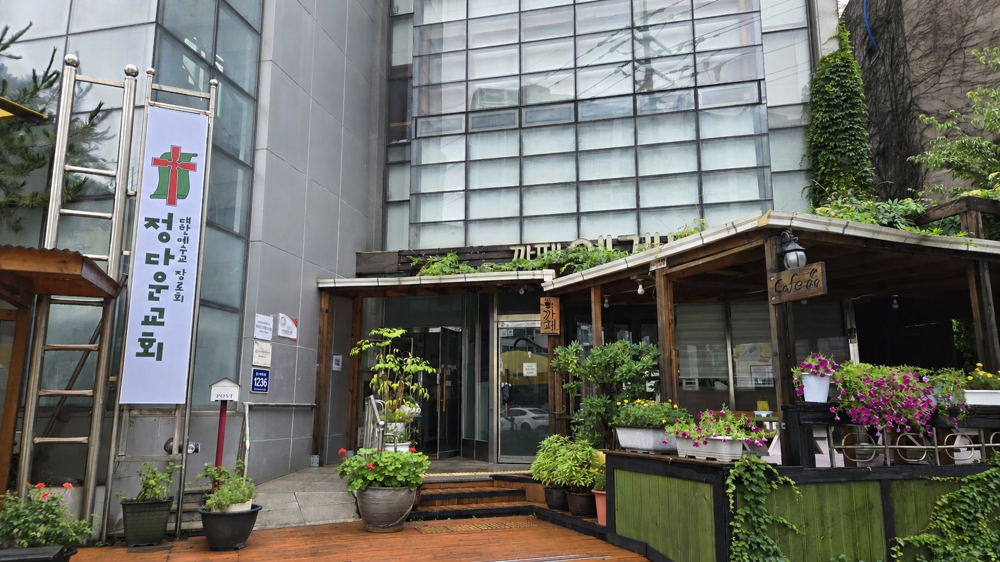
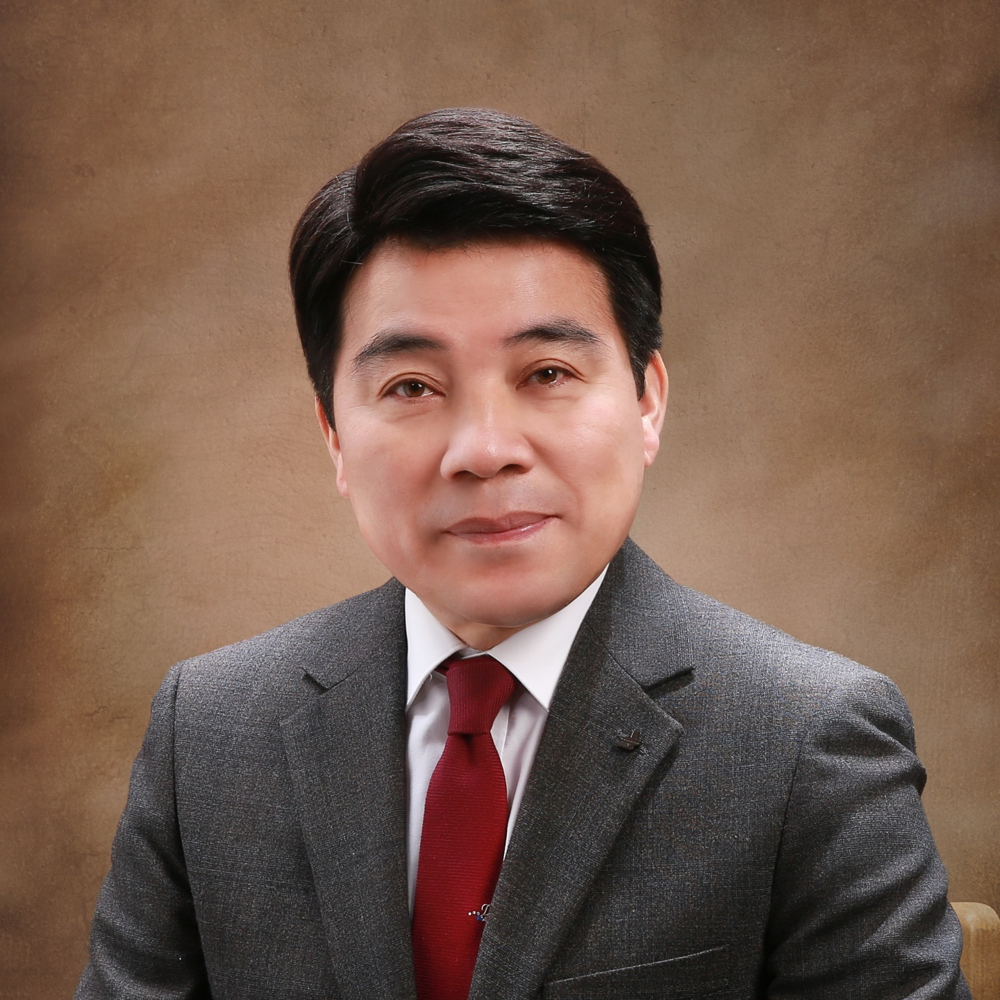
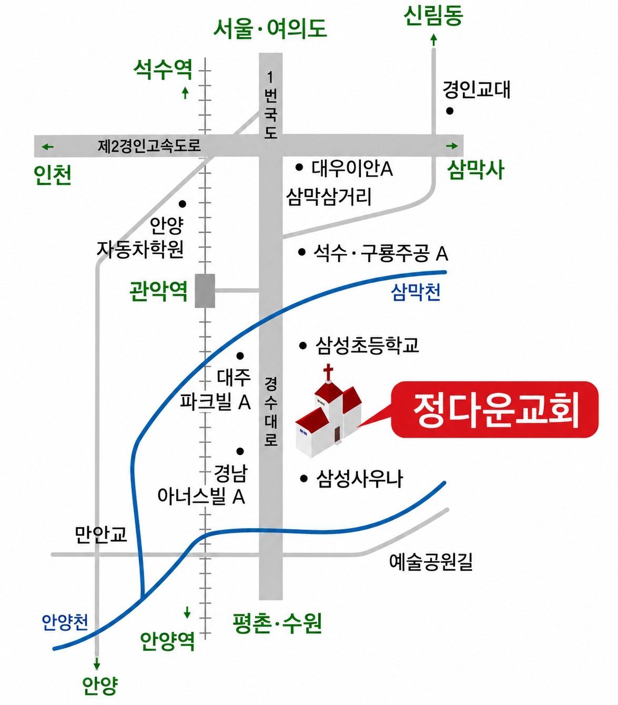
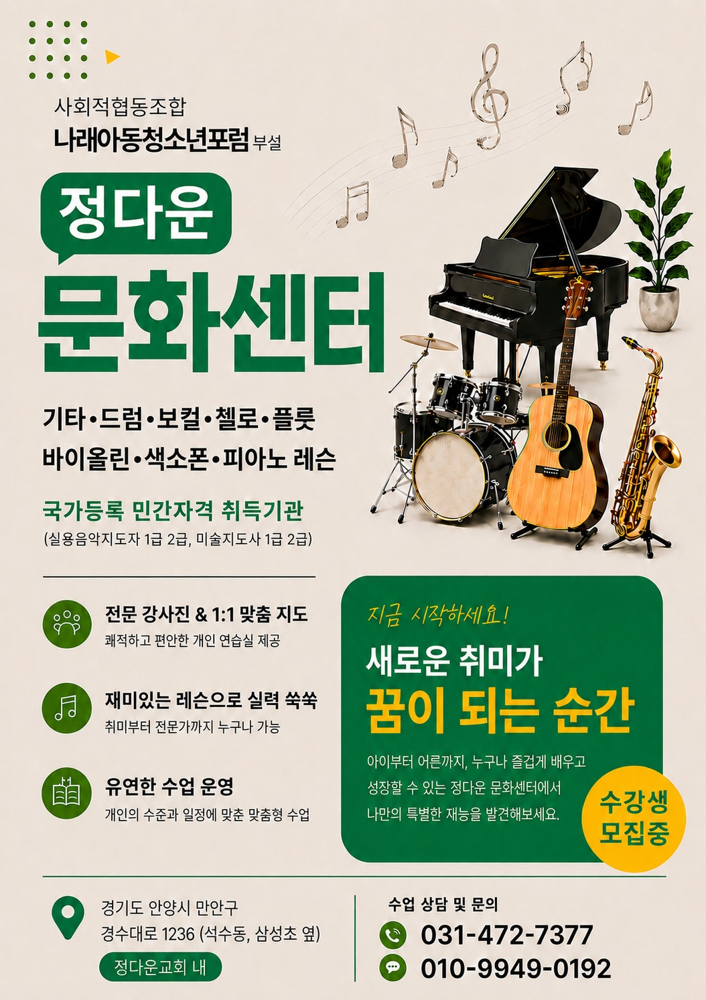

공지
여전도회 강남시찰회
2026. 06. 15

교회소개
정다운교회는 대한예수교장로회(통합)교단에 속해 있으며 1971년 9월 서울대 앞 신림동(일명 고시촌)에서 개척 설립되어 지역사회를 섬기며 특히 고시 청년선교에 힘쓰다가 2011년 11월 안양시 석수동에 교회를 신축 이전한 후 교육·복지·문화사역을 중심으로 지역과 함께하며 예수 그리스도의 사랑과 섬김을 실천하고 있습니다.

담임목사
담임목사 인사말
정다운교회에 오신 것을
진심으로 환영합니다.
"정다운교회"는 이름 그대로 정이 넘치고 따뜻한 공동체를 꿈꾸는 교회입니다. 1971년 서울대 앞 신림동에서 청년들의 선교를 위해 시작된 이 교회는 반세기가 넘는 시간 동안 하나님의 은혜 안에서 자라왔습니다.
2011년 안양시 석수동으로 이전한 후에도 교육·복지·문화라는 3대 핵심 비전을 붙들고 지역사회와 함께 주님의 뜻을 이루어 가고 있습니다.
내 집은 만민이 기도하는 집이라 하셨으니 언제든 찾아오셔서 함께 예배드리고 말씀 나누며 서로 격려하는 아름다운 공동체를 만들어 갔으면 합니다.
정다운교회 담임목사 이종운 드림
핵심가치
아이부터 어르신까지 모든 세대가 말씀 위에서 하나님의 사람으로 자라가도록 돕습니다.
교육·복지·문화사역으로 건물 전체를 이웃에게 열어두고 지역과 함께 자랍니다.
복음이 필요한 곳이라면 어디든 지역과 열방을 향한 선교에 헌신합니다.
예배안내
교회소식
지역사역
1971년 신림동에서 시작한 청년선교의 정신은
2011년 안양 이전 후 4층 건물 전체를 지역사회와 함께하는 공간으로 활용하고 있습니다.
지역주민들은 변장한 천사입니다.
15명의 어르신이 생활하는 입소시설로 따뜻하고 전문적인 돌봄을 제공합니다.
주간에 어르신들을 모셔와서 재활·치매예방·인지 정서지원 등의 프로그램을 제공합니다.
경기도 교육청이 위탁하여 운영하고 있으며 고등학교 2·3학년들의 진로 지도 및 음악 예능 교육을 주로하는 학교입니다.
24명의 어린이가 방과후 돌봄을 받으며 독서지도·악기교실·영어회화 등 다양한 활동에 참여합니다.
장애 청년들의 일자리 사업으로 운영되며 정다운교회는 공간을 무상으로 제공하면서 장애인 복지 비전을 추구합니다.
자세히 보기 ↗형편이 어려운 이웃 누구나 가져갈 수 있는 무료 쌀독을 운영하고 있습니다.
'평생의 친구 악기를 배웁시다' 기타·드럼·바이올린·첼로·색소폰·피아노·플룻·드럼 등을 배울 수 있도록 교회 공간을 열어 지역주민 누구나 배움과 취미 활동에 도움을 드립니다.
주일예배와 주중예배가 드려지는 예배 공간입니다.
기도·찬양·성도의 교제가 이루어지는 하나님의 집입니다.
칼럼
감사는 영혼의 바로 미터이다. 감사하는 마음을 가진 사람은 따뜻하다. 영혼에 자유가 있고 마음에 걸림이 없다. 딱딱하고 거친 사람은 감사하기 어렵다. 거만한 마음과 감사는 함께 할 수 없다. 감사는 신앙인의 아이콘이다. 불평하는 마음은 괴롭다. 그 영혼이 욕구불만에 묶여 있다. 말이 거친 사람은 겸손을 포기한 자다. 안된다, 못한다, 죽겠다 말하는 자들은 감사를 잃었다. 감사는 긍정 언어를 가진 사람들의 가장 큰 재산이다. 감사가 안되면 기도하기 어렵다. 하나님이 없는 사람, 성령에 어두운 사람은 감사가 없다. 예수가 없는 사람, 하나님이 하실 일에 대한 기대가 없으면 감사 근처도 못 간다. 감사는 훈련이다. 무슨 큰 건이 이루어지고 내가 원하는 대로 되어야 감사가 아니다. 감사는 사소한 몸짓이고 감사는 평범한 일상이어야 한다. 범사에 감사하라. 모든 일을 어떻게 감사할 수 있나? 감사할 수 있어야 감사하지. 이렇게 생각하는 사람은 지적인 신앙인인 거다. 하나님이 보이지 않고 성령이 있음도 모르는 사람이다. 내가 모르는 일이지만 감사하고 이해할 수 없어도 감사하고 내 뜻대로 안 되도 감사할 수 있도록 커져야 한다. 감사에 있어서는 조건이 없다. 그래서 무조건 감사해야 한다. 나는 존재한다, 고로 감사한다. 나는 감사한다, 그래서 존재한다. 내가 세상에 존재하는 것부터 감사이다. 하나님의 존재를 알지 못하면 감사를 모르는 것이고 조건부 감사는 참 감사가 아니다. 감사하는 자의 다른 표현은 겸손이다. 뻣뻣하고 딱딱한 사람은 감사가 없어서 그렇다고 보면 맞다. 감사는 아름다운 회상이다. 나쁜 것만 기억하면 우울하고 힘든 인생이다. 좋은 추억이 많고 잘된 일도 많은데 왜 부정적으로 생각하는가. 왜 낙심하고 절망하는가? 감사에 인색해서이다. 감사는 하나님의 주권을 인정하는 사람의 몸짓이다. 나는 무익한 종입니다. 처분대로 하옵소서. 내 안에 계신 성령의 뜻을 알려면 감사부터 하고 봐야 한다. 감사하는 사람은 기도한다. 기도보다 성령보다 앞서 행하지 않는다. 주의 뜻이 무엇인지 분별해야 한다. 주의 뜻은 감사하는 것, 기도하는 것, 그리고 기뻐하는 것. 그대 감사하는 자가 되라!
죽마고우, 세발자전거 타고 놀던 은성이라는 친구가 있다. 초등학교 들어가기 전, 대여섯 살 정도에 같이 놀던 기억이 선명하다. 바닷가 마을 작은 교회에 그의 아버지가 전도사로 부임하셨다. 전도사님이 우리 집에 심방 오시면 꼭 아들을 데려오셨다. 한번은 전도사님이 세발자전거를 둘러메고 오셨다. 그 시절 전도사 생활상으로는 최고의 선물이었을 것이다. 그 친구가 엄청 부러웠다. 내 아버지는 마음에 걸리셨는지 나무로 자전거를 만들기 시작하셨다. 잘 말린 소나무로 바퀴를 만들고 페달과 축과 손잡이를 연결하여 자전거가 완성되었다. 얼마 후 은성이가 또 우리 집에 왔다. 둘은 언덕에 올라 자전거로 미끄러져 내려가며 스릴을 즐겼다. 몇 번을 그러고 노는데 바퀴의 조임 부분이 풀리면서 자전거와 함께 언덕을 굴렀다. 친구의 기억은 거기서 멈췄다. 그 후로 심방을 안 따라왔던지, 아니면 그 추억이 절정이었기 때문일 것이다. 그리고 몇 년 후 친구는 아버지 따라 이사를 갔고 오랫동안 만나지 못했는데 목사가 되었다는 소문을 들었다. 그리고 몇 년 전 총회에서 만났고 그에게 내 책을 선물로 보냈더니 이런 글을 보내왔다.
"이 목사! 어제는 너무 반가웠고 잘 들어갔지? 함께 노회장 동기가 되어서 너무 좋다. 희망과 기적! 오늘 새벽기도 마치고 다 읽었는데 고시원에서 고생하다가 신학 공부를 하고 대구로 갔다가 다시 하나님께서 고시촌으로 부름을 받아 교회를 세우느라 많은 고생을 했구나~ 이제는 하나님께서 존귀하게 세우셔서 책에 있는 것처럼 하나님은 방법을 찾지 않고 사람을 찾으시는데 하나님이 찾으시는 사람으로 잘 섬기는 것을 보니 참으로 감사하구나. 베트남, 라오스, 몽골, 선교 여정도 귀하고 이스라엘 성지순례도 생각나고 이 목사의 영성을 배울 수 있어서 감사했다. 좋은 책을 통하여 귀한 은혜를 받게 되어서 감사하다. 친구야~"
십 년 전 간절했던 그 마음이 떠오른다. 대구의 한 병원에서 11시간 넘게 심장 관상동맥 수술을 받으시는 아버지를 온밤을 새면서 기다렸었다. 감사하게도 잘 회복이 되었으나 대수술 끝에 찾아오는 공황장애와 섬망 증세로 중환자실을 벗어날 수 있을지 확신할 수 없었다. 목회 일정상 길게 머물 수도 없는 형편이라 내려가면 복도 끝 빈 의자에서 기댔다 누웠다 반복하면서 아침을 맞았다. 간절했던 우리 가족들의 마음을 보셨는지 아버지는 환란을 이겨내셨고 90이 넘도록 지금 우리 곁에 계신다. 심장질환과 통풍, 인지 저하 등 여러 가지 지병을 달고서 힘든 인생이지만 내가 아는 한 우리 집안 최고령으로 살고 계신다. 어르신들은 기침만 잘못해도 어디 뼈에 금이 간다는데 보름 전쯤 집안에서 무슨 무거운 걸 옮기시다가 주저앉으셨단다. 바쁜 자녀들 걱정시킨다고 쉬쉬하다 늦게 알게 되었고 당장에 모시고 가서 MRI를 찍어보니 허리부분 압박골절 상태였다. 두 군데 병원에서 퇴짜맞고 결국 샘병원으로 왔는데 대수롭지 않게 여기면서 시술 일정을 잡았다. 그러나 고령에 몸 상태도 안 좋으시니까 온 식구들이 걱정이었다. 샘병원 6층 수술실 앞 보호자 대기실 그 안쪽에 작은 기도실이 있다. 코로나 전까지 화.목.기도회 순번이 되면 자주 와서 설교하고 수술환자들과 기도회 참석하는 환우들을 위해 기도해 주던 곳이다. 여전히 대기실에는 보호자들이 기다리고 있었지만 기도실 안에는 아무도 없었다. 4년 만에 찾은 기도실. 내가 수술환자의 보호자라는 것이 그때와는 다른 점이다. 하나님의 은혜로 시술은 잘되었고 하룻밤 지켜보니까 괜찮으실 것 같다. 오늘 새벽도 늘 깨는 시간. 일어나서 복도를 나갔더니 광주서 올라오신 환자 보호자 권사님이 따라와 앉으시길.
크리스타(pax christa)의 우화 한 토막이다. 실연당한 비둘기 총각이 우울하게 앉아 있을 때 참새가 다가와서 말을 걸었다. "너, 눈송이 하나의 무게가 얼마나 되는지 알아?" 비둘기는 무뚝뚝하게 대답했다. "그런 걸 내가 어떻게 알아? 어쨌든 별거 아니겠지" 참새는 자신의 경험담을 이야기했다. "내가 어느 날 나뭇가지에 앉아 있는데 눈이 내리기 시작했어. 아주 조용히 내리는 눈송이에 취해 있다가 심심해서 나무에 내리는 눈송이를 세어봤거든. 정확히 374만 1952송이가 내려앉을 때까지 아무 이상이 없었어. 그런데 374만 1953번째 송이가 사뿐 내려앉자 가지가 찌지직 하고 부러져 버리더라구." 조잘대던 참새가 떠나자 비둘기는 혼자 이렇게 중얼거렸다. "맞아, 하찮게 보이는 그 하나가 대단한 거야. 옛날 노아 홍수 때 우리 조상 비둘기가 감람나무 잎사귀 하나를 물어왔더니 배에 탄 사람들이 큰 희망을 갖게 되었지. 별거 아니라고 생각하던 눈송이 하나, 별거 아닌 감람나무잎 하나의 무게는 정말 어마어마한 것이야. 그래, 나도 한 번 더 시도해 봐야지." 이렇게 해서 비둘기 총각은 흠모하던 처녀에게 열두 번째 구애를 하여 결혼을 했다고 한다.
엊그제 내린 폭설은 11월 강설량으로 최대치이고 백여 년 만에 기록적인 일이라고 했다. 그리 춥지 않은날씨라 비가 내리나보다, 눈이 오나보다 했는데 새벽에 나오는데 보니까 설국이었다. 눈을 치워야 한다는 생각에 기도를 단축하고 제설작업에 들어갔다. "도대체 뭘 먹었기에 눈 한 삽이 이렇게 무거울 수 있을까?" 싶을 정도로 무거웠다. 문제는 옥상이었다. 아니나 다를까 장로님과 애써 만들었던 하우스 차광막이 무너져내렸고 철제 프레임이 다 휘어져 주저 앉아 있었다. 걱정 태산인 표정으로 한쪽에 웅크리고 있던 닭들에게 내가 말했다. "이런 눈은 너희들 생전 처음이지?"
우리교회에 부임했을 때 불혹에도 미치지 않는 내 나이 서른 일곱. 아직 담임으로 나가기엔 이른 나이였다. 나를 우리교회에 설교하도록 소개하셨던 멘토 김 목사님은 원로 목사님과 친구였는데 전부터 가끔 통화를 할 때면 "이 목사, 사십이 되었는가?" 묻곤 하셨다. 2000년 4월 와서보니 나보다 나 많은 형 누나뻘 고시생들도 더러 있어서 목양실에서 차담을 나누곤 했고 장수생들에게는 바늘 구멍과도 같은 합격의 기쁨을 함께 나누곤 했다. 그 시절 노회에 가면 담임목사 중에 내가 가장 젊었는데 원로 목사님은 부임하던 해부터 나를 위임목사로 세워주셨다. 정말 파격적인 사례였다. 김 목사님이 좋게 말씀해주신 탓도 있지만, 목사님 특유의 강단으로 소신껏 밀어 붙이셨다. 원로 목사님은 우리 교회가 속한 서울관악노회의 초대 노회장이셨는데 노회나 총회나 사석에서까지 내게 대해서 좋은 말씀을 많이 해주셨다. 사실, 목사님의 고향은 전북 부안이시고, 나는 경상도 출신이기 때문에 노회 안에서는 원로 목사와 후임 목사 간에 편안하고 좋은 관계가 미담이 되곤 했다. 2000년 12월, 원로 목사님이 마지막 당회를 하시는 자리에서 내게 부탁, 아니 명령(?)을 하셨다. "1997년 말에 9층 빌딩 교회를 건축 입당하고 이제는 목회할 만하다 싶었는데, 뜻하지 않게 병이 와서 수술을 하고 보니, 내가 계속하는 것보다 젊고 패기 있는 목사에게 바통을 넘겨주는 것이 교회를 위해서 더 낫다고 확신하고 청빙 절차를 밟아서 이 목사님이 오셨으니 목사님, 이제부터 열심히 하셔서 우리 교회 본당 220석을 채우십시오." 그렇게 시작한 목회가 하나님이 기름부어 주셔서 2년 만에 그 본당을 청년들로 가득 채우게 되었다. 기적 같은 일이 우리교회 역사에서 일어난 것이다. 주일예배를 청소년회관 강당을 빌려서 5년을 드리다가 안양으로 오게 된 것도 기적같은 일이었고, 우리가 꿈꾸지 않았던 각 층에 시설과 기관을 설치, 유치하여 사람을 섬기고 영혼을 구원하는 사역을 하는 것도 돌이켜보면 다 기적이다. 기적이라 함은 내가 한 것이 아니라, 하나님이 하셨다는 고백이다. 우리는 기적 속에 산다. 기적의 주역은 하나님이시기에 기적은 계속될 것이다.
우리나라에서 가장 해가 빨리 뜨는 명소가 호미곶. 어렸을 적 걸어서 한 시간 거리에 있었다. 가끔 학교 소풍을 가거나 아버지와 낚시를 가곤 했던 곳이다. 거기 일제 때부터 등대가 하나 서 있고, 지금은 주변에 해양박물관과 갯바위 위에 사람 손 모양의 조형물을 세워서 텔레비전에 자주 나온다. 이번에도 새해 첫날 내고향 호미곶 바다가 뒤로 보였다. 어느 때부터인가 새해 첫날이면 정동진이나 동해 각 스팟과 전국 명산에서 해맞이 행사로 야단인데 난 좀 우습다. 매일 뜨는 해와 새해 첫날 해가 뭐가 다를까?
우리 집은 호미곶 대보 등대보다 더 높은 언덕 위에 있었다. 아마 우리나라에서 가장 빨리 해가 뜨는 것을 보면서 자랐을 것 같다. 매일 아침 바다 위로 솟구치는 해를 안고 학교를 다녔다. 그렇다고 해서 특별할 것도 없다. 내 인생에 가장 특별한 일은 바닷가에 교회가 섰고 전도자를 통하여 내가 예수를 믿었고 성령을 받은 것에 있다. 그 후 종가집 제사 때도 절해본 적이 없고, 해와 달에게 빌어 본 적도 없다. 주일학교 선생님이 가르쳐주셨다. 기도는 하나님께 하는 것이고 하나님이 복 주시는 거라고. 바닷가다 보니까 우상숭배가 심했다. 조상제사는 뭐 그렇다 치더라도 오징어, 꽁치, 멸치, 고래잡이 출어 때나 배의 진수식 때 무당 굿판에 돼지머리는 기본이었다. 언제나 제사가 끝나면 술판과 싸움판으로 시끄러웠다. 용왕신을 찾고 산신령을 찾고 암자와 사찰을 찾고 조상제사 꼬박꼬박 찾아도 남들보다 더 잘사는 것도 아니었고 언덕 위의 우리 집만큼 행복하지 못했다. 아버지는 맏이였지만 종갓집을 떠나 진흙을 이겨서 집을 짓고 살았다. 산간을 개척하여 딸기, 메론, 수박, 당근, 무 배추 등을 경작하셨다. 한겨울만 빼놓고 읍내에서까지 사람들이 찾아왔다. 우리 집에서 나오는 과일들은 더 맛있고 당도가 좋다고 했다. 젊은 연인들의 데이트 장소였다. 그리고 겨울이면 우리 집은 이동교회였다. 구역예배도 뜨거웠고 전도사님을 비롯해서 바닷가 교인들이 자주 모였다. 어제로 아버지가 90회 생신을 맞으셨다. 좀 더 건강하고 오래 사셨으면 좋겠다.
인천공항 검색대를 통과하지 못한 채 주인과 분리된 물품들을 몇 박스를 실어 왔다. 이 어떻게 된 물품들인가 보니까, 공항 검색대에 짐을 올려놓으면 가방이나 짐꾸러미 속에 든 물건들의 모양들이 전자파로 잡혀서 보여지는데. 대부분은 통과되지만 공항에 오다가 먹던 물병, 휴대 가방에 따로 넣어서 들고 들어온 스프레이, 로션이나 크림, 샴푸와 바디 크림을 비롯해서 칼이나 가위, 각종 연장에 이르기까지, 이런 것들은 가차 없이 분리되어야 한다. 여행객들이 사전에 숙지하지 못하여 부랴부랴 가방에서 꺼내고 아쉬운 작별을 해야 한다. 그냥 쓰레기 통에 버릴 만한 것들도 있지만 대부분, 손때 묻은 것이고 소중하게 쓰던 것들이라 아깝지만 비행기는 타야 하기에 냉철하게 분리되어야 한다. 그 소중한 물품들을 인천공항 물품 관리공사로부터 기증을 받았는데, 낯설지만 간추려서 새 주인을 찾아주고 있다. 남들이 쓰던 것들이라 취향이 안 맞을 수도 있지만 생각하기 나름인 것 같다. 한때 내가 쓰던 것을 공항에 잠시 맡겨뒀다가 되찾은 것이라 생각하면 오히려 반갑고 요긴할 수 있다. 교회 각층에서 요긴할 모기향, 방향제, 칼과 가위들과 간단한 공구류들을 만나서 잘 챙겨뒀다. 가져온 물품들을 정리하면서 이런 생각을 해봤다. 내가 세상을 작별할 때 천국의 검색대가 있다면 어떤 것들이 통과될 수 있을까? 믿음, 소망, 사랑 이 세 가지는 영원할 것이고 구원받은 내 영혼과 주님께서 내게 새롭게 입혀주신 신령한 몸 정도가 아닐까? 이 땅에서 내가 소중하게 쓰던 대부분 물품들은 모두 남겨둬야 한다. 집과 재산, 차량이나 심지어 사랑하는 가족들까지 다 필요하고 소중했지만 천국의 검색대는 통과하지 못할 것이다.
2011년 11월 말 교회 입당예배 후 문화센터를 개소했다. 교회건축으로 거의 심신이 탈진할 지경이었지만 지체할 수 없었다. 2012년 4월 꿈이룸문화센터 이름으로 30여 가지 강좌를 준비하고 지역홍보에 들어갔다. 그런데 막상 강좌가 개설된 과목은 기타, 바이올린, 드럼 등 열 개 정도에 불과했다. 쏟은 열정에 비해서 성과가 너무 미미했다. 4~5개월을 유지하는데 이게 만만찮은 일이었다. 기본 자본이 없다 보니 강사 페이를 지급하는 것이 빠듯했고 강사가 빠지면 대체가 어려웠다. 파주에서 선배가 교회건축 후 문화센터를 해서 회원 7백여 명이 매주 성황을 이루던 것과는 전혀 다른 모습이었다. 그제사 알았다. 교회가 가지고 있는 지역 인프라가 없었고, 백화점부터 인근 주민센터를 비롯해서 가까운 대학, 심지어 기아자동차에까지 문화강좌가 있었는데 경쟁력이 미치기가 어려웠다. 안양으로 와서 처음 시행착오였다. 6개월 만에 문화센터를 접었다. 그래 이 에너지라면 요양원을 해보자 생각하고 또 정신없이 쫓아다녔다. 내 사전에 관심도 없었던 일이었고 내가 이런 일까지 해야 하나 하는 생각에 애초에 접었었는데 막상 덤벼보니 요양원은 문화센터 준비의 두 세배나 힘든 과정이었다. 공사비 마련이 제일 문제였고 직접 뛰어야 했다. 4층 공간을 비워야 했고 새벽부터 저녁까지 공사에, 뒷정리, 공정에 따르는 직접 설계를 하고, 새벽을 깨워 기도했고 컴퓨터를 갖다 놓고 사회복지사 공부를 해야 했고 필요한 자재를 실어 나르고 일일이 여삼추였다. 그렇게 1층 카페, 4층 요양원, 3층 주간보호센터, 2층에 돌봄센터와 예능학교를 설치했다. 그리고 지난 몇 년간 노회의 주요 직무도 하나님의 은혜로 잘 마칠 수 있었다. 그리고 14년 만에 다시 문화센터를 해보려고 한다. 왜 또 문화센터냐? 이제는 지역사회에 인프라가 형성되었고, 교회 공간을 이용해서 뭔가를 가르치고 소통하면서 예배자로 세우는 일이 가장 필요한 때라고 생각하기 때문이다. 잘될지 안될지는 잘 모른다. 그저 믿음을 갖고 도전해보는 것이다. 실패를 두려워한다면 무엇을 해낼 수 있겠는가?
2005년 5월 9일 월요일 신림동에서 인천 방향으로 가다가 우연치 않게 길가의 한 부동산을 들르게 된 계기로 경수대로변 현재의 우리 교회 부지를 소개받았다. 너무나 좋은 위치에 교회 자리로는 최고의 입지를 갖고 있었다. 그러나 등기부를 확인해보니 40여 명의 공유 필지라 언감생심이었다. 그러나 보여주신 이유가 있을 거라 생각하고 당회원들과 함께 기도를 시작했다. 그러다가 1년 3개월이 지난 2006년 8월 14일 월요일 우연히 이 길을 지나다가 잠깐 기도하러 들렀는데 그동안 공유지분을 하나하나 매입하여 유치원을 건축하려던 박모씨를 만나게 되었는데, 한여름의 뙈약볕 아래에 서서 자기 사연과 내 사연을 나누던 중에 그분이 확신에 차서 말했다. "목사님, 수고는 제가 했지만 이 땅은 목사님 땅이네요." 도곡동에 살던 그분이 나를 만난 것은 기적중에 기적이었다. 2007년 1월 성전부지를 매입하고 거룩한 땅이라 불렀다. 2009년 11월 건축문제로 교회가 분열되었고, 2009년 12월 27일 남은 자들의 기공예배, 2010년 1월 착공, 그해 10월 5일 사택부터 이사하고, 2011년 11월 27일 눈물의 입당예배를 드렸다. 그런데 그사이 합격하고 결혼하면서 이렇게 저렇게 떠나간 청년들의 뒷자리를 메울 길이 보이지 않았다. 지역사회 욕구조사서를 만들어 동네를 다니면서 설문을 받아냈다. 그러고 나서 이 지역 주민들이 바라는 교회상 내지는 교회가 해주기를 바라는 세 가지를 알아낼 수 있었다. 지역 사람들의 욕구 첫째 교육, 둘째 사회복지, 셋째 문화였던 것. 교육이라 함은 우리 지역에 어린이들과 청소년들이 많아서 말하자면 in서울을 목표로 자녀들의 학업 및 진로에 대한 열망이 강했다. 사회복지라고 한 것은 이 지역에 노인층들이 많고 장애인들도 적지 않은 연고였다. 그리고 문화라고 응답한 것은 맞벌이 부부 및 젊은 층들이 많은데 그들은 문화생활에 대한 열망이 적지 않다는 것을 반영했다. 그래서 2013년 문화센터를 설립했다. 그러나 6개월 만에 접고 요양원을 세웠다. 그리고 12년 흘렀는데 이제는 때가 된 것 같다. 지역사회의 요청이었고 시대적인 요구요 우리 교회가 하면 잘할 수 있기 때문이라고 생각한다.
나이아가라에 갔을 때 누군가 말해줬다. "강한 신념과 폭포는 길을 만든다." 저 폭포도 옛날 옛적에는 하류 쪽에서 떨어지고 있었다는 이야기. 그런데 인생의 길도, 닥치는 문제도 약한 의지로는 헤쳐 나갈 수가 없다. 신념은 한 사람의 생각과 행위를 넘어 인생 전반에 걸쳐서 영향을 미치는데, 성공이나 건강이나 행복조차도 결정지을 수 있다. 성공하는 사람은 일을 시작할 때 이미 성공에 대한 신념이 있으며, 그렇게 때문에 일을 하는 과정에서 아무리 큰 어려움과 시련을 만난다 하더라도 두려워하지 않는다. 발명가 에디슨은 전구를 발명하기 위해서 1200번의 실패를 거듭했다. 그러나 그는 그것을 실패라고 하지 않고 그렇게 해서는 안된다는 방법을 찾은 기회로 여겼다. 사람에게는 잠재 능력이 있다. 인간은 자신의 뇌 용량의 10%만을 사용한다고 한다. 창의적인 사고를 하고 모든 환경과 역학관계 속에서 배운다. 아인슈타인도 두뇌가 뛰어나서가 아니라 자신의 잠재 능력을 최고로 활용했기 때문에 뛰어난 사람이 될 수 있었다.
그리고 중요한 것 믿음이다. 사람이 자기 힘과 의지로 할 수 있는 한계가 있다. 이런 이야기가 있다. 물건을 잔뜩 실은 마차가 진흙에 빠지고 말았다. 마부가 당황하면서 하늘을 향해 두 팔을 벌리고 기도했다. "아킬레우스여 도와주세요." 그러자 엄청난 힘을 가진 장수가 나타났다. 그러나 마차를 들어 올리지 않았다. 그는 말했다. "당신이 마차바퀴 한쪽을 어깨로 들어 올리세요. 말들이 조금씩 움직이면 바퀴가 빠져 나올거요." 믿음이 있다고 해서 하나님이 무조건 도와주시는 건 아니다. 믿음은 뜻을 정하고 내 할 일을 힘써 한다는 것이고, 그리고 기도하면서 하나님께 맡기는 것이다. 사람들은 말한다. "믿는 구석이 있으면 세상 사는 데 있어서 큰 힘이 된다"고. 그런데 주님은 말씀하셨다. "하나님을 믿으니 또 나를 믿으라." 그분은 내 생각을 크게 하시고 마음을 강하게 하시며 내가 알 수 없고 할 수 없는 영역에까지 능력을 주시는 분이시다.
매일 기도
세 번째 이르시되 요한의 아들 시몬아 네가 나를 사랑하느냐 하시니 주께서 세 번째 네가 나를 사랑하느냐 하시므로 베드로가 근심하여 이르되 주님 모든 것을 아시오매 내가 주님을 사랑하는 줄을 주님께서 아시나이다 예수께서 이르시되 내 양을 먹이라 (요21:17)
사명의 출발은 사랑입니다. 새해 그 무엇보다 중요한 것은 주님을 사랑하는 것입니다. 사랑은 식어진 가슴에 불을 붙여줍니다. 주님을 사랑하면 열정도 지혜도 능력도 주셔서 성공적인 인생이 펼쳐질 수 있습니다. 사랑과 은혜가 풍성하신 하나님 아버지, 2026년 새해를 맞게 하셔서 감사합니다. 많은 해를 보내고 새해를 맞아도 옛사람에 머물고 진부한 생각과 삶에 매몰되어 산다면 허무한 인생이 되고 맙니다. 너희는 썩어져 가는 구습을 쫓는 옛사람을 버리고 오직 심령을 새롭게 함으로 변화를 받아 하나님이 기뻐하시고 온전하신 뜻이 무엇인지 분별하라 하셨사오매. 선악을 분별하는 능력을 주옵시고, 언제나 하나님 편에 서게 하시오며, 공예배와 주일성수를 힘써 지키며, 하나님을 더 사랑하는 열정으로 불붙여주시옵소서. 올해는 매일이 새해가 되게 하시고 말씀 붙잡고 기도함으로 승리하게 하옵소서. (예수님의 이름으로 기도합니다. 아멘)
내가 애굽에 있는 내 백성의 고통을 분명히 보고 그들이 그들의 감독자로 말미암아 부르짖음을 듣고 그 근심을 알고 내가 내려가서 그들을 애굽인의 손에서 건져내고 그들을 그 땅에서 인도하여 아름답고 광대한 땅, 젖과 꿀이 흐르는 땅 곧 가나안 족속, 헷 족속, 아모리 족속, 브리스 족속, 헷 족속, 아모리 족속, 브리스 족속, 히위 족속, 여부스 족속의 지방에 데려가려 하노라 (출3:7-8)
애굽에서 오랜 고통과 절망 가운데 있던 이스라엘 백성들을 건져내신 하나님이 모세를 통하여 광야를 거쳐 가나안 땅으로 인도하신 것처럼 예수 그리스도를 통하여 모든 믿는 자들을 천국으로 인도하실 것입니다. 전능하신 하나님 아버지, 우리를 위해 하늘에 거처를 예비하신 것을 믿습니다. 천국에서 오신 예수님이 천국복음을 전파하셨고 보혈을 뿌려 죄 사함의 길을 열어주신 것을 찬양합니다. 천국 없으면 우리 인생 백년을 살고 부귀영화를 누린들 무슨 소용이 있겠습니까. 세월이 유수같이 흘러가는 중에 병들고 쇠락하는 우리 인생의 소망은 오직 하나님과 동행하다가 천국에 이르는 것이오니. 내 인생 항해의 방향을 잡아주시고 시험에 들지 않게 하옵시고 죄를 멀리하고 의를 행하며 살도록 인도하여 주옵소서. 선물로 주신 오늘 하루를 성실과 사랑으로 임하게 하시고 행복한 동행이 되게 하옵소서. (예수님의 이름으로 기도합니다. 아멘)
여호와께서는 자기에게 간구하는 모든 자 곧 진실하게 간구하는 모든 자에게 가까이 하시는도다 그는 자기를 경외하는 자들의 소원을 이루시며 또 그들의 부르짖음을 들으사 구원하시리로다 (시편145:18-19)
기도는 진실해야 합니다. 욕심을 갖고 기도하거나, 내 뜻을 고집하는 식의 기도라면 공염불이 되고 말 것입니다. 하나님을 사랑하고 그를 가까이 하는 경건한 자의 기도가 힘이 있습니다. 긍휼이 풍성하신 하나님 아버지, 내게 기도를 가르쳐 주셔서 감사합니다. 기도를 들으시는 분이 하늘에 계시고 예수님께서 기도를 중재하시는 것을 믿고 감사드립니다. 주님 기도하오니 내게 낙망하거나 두려워하지 않고 믿음으로 기도할 수 있도록 성령과 은혜로 충만하게 하여 주옵소서. 정욕과 교만을 멀리하고 죄를 회개함으로 진실하고 힘 있는 기도를 드릴 수 있도록 은혜 베풀어 주시옵소서. 주변에 고난 당하는 자들과 병약한 자들을 위로하여 주시고 주의 보혈을 발라 질병을 치료하시고 심령을 소생케 하여 주시옵소서. (예수님의 이름으로 기도합니다. 아멘)
여호와께서 시온의 포로를 돌려 보내실 때에 우리는 꿈꾸는 것 같았도다 그 때에 우리 입에는 웃음이 가득하고 우리 혀에는 찬양이 찼었도다 그 때에 뭇 나라 가운데에서 말하기를 여호와께서 그들을 위하여 큰 일을 행하셨다 하였도다 (시편126:1-2)
바벨론 땅에 흩어져 살던 유다 백성들에게 자유가 선포되었습니다. 삼일운동과 독립의 여망이 모여 이 땅에 자유와 번영이 주어졌습니다. 죄와 사망의 종 되었던 우리가 예수의 복음을 듣고 자유케 되었습니다. 이 모두가 하나님이 배후에 하신 일입니다. 공의와 사랑이 풍성하신 하나님 아버지, 압제와 고통 가운데 있던 이 민족이 그리스도 사랑의 정신과 하나님의 살아계심을 믿고 세계사에 유래 없는 비폭력저항의 삼일운동을 일으킬 수 있게 하셨고, 그 운동은 일제의 총칼에 유린 되고 실패한 것 같았지만, 그 정신과 갈망과 기도가 모이고 투쟁과 항거와 거사가 이어져 자유의 시간을 앞당길 수 있었음을 믿습니다. 그러나 아직 압제와 고통 가운데 있는 북한 땅을 풀어 놓아 자유케 하시고 어둠의 세력들을 물리쳐 주옵소서. 그리하여 우리 민족의 완전한 독립을 실현할 수 있도록 이 땅에 은혜를 부어 주옵소서. (예수님의 이름으로 기도합니다. 아멘)
우리의 영혼이 사냥꾼의 올무에서 벗어난 새같이 되었나니 올무가 끊어지므로 우리가 벗어났도다 우리의 도움은 천지를 지으신 여호와에게서로다 (시편124:7-8)
모든 사람이 죄를 범하고 마귀의 올무에 걸려 영원한 사망에 처하여 있었지만, 하나님의 아들 예수 그리스도 십자가의 보혈로 우리가 죄와 사망에서 자유케 되었습니다. 은혜와 사랑이 풍성하신 하나님 아버지, 사냥꾼의 올무, 즉 죄와 사망에서 나를 건져주신 은혜를 찬양합니다. 지금도 온 땅에는 하나님을 알지 못하거나 주를 대적하는 많은 영혼들이 있습니다. 그러나 하나님은 오래 참으시는 중에 악인도 변화되게 하시고 아버지의 잃어버린 영혼들을 하나하나 인도하시는 것을 믿습니다. 내 영혼이 곤고할 때 마음이 낙심될 때 여러 가지 곤고한 일을 당할 때 주님 앞에 엎드리고 기도할 수 있도록 힘을 주시옵소서. 사랑하는 가족들과 이웃에 대해서 열린 마음을 갖게 하시고 비난과 비판의 말을 금하며 인내와 사랑을 더하도록 도와주옵소서. 아름다운 자연에 대해서, 계절의 변화들을 주시하고 감사를 표현할 수 있는 오늘이 되도록 도와주옵소서. (예수님의 이름으로 기도합니다. 아멘)
의인은 종려나무같이 번성하며 레바논의 백향목같이 성장하리로다 이는 여호와의 집에 심겼음이여 우리 하나님의 뜰 안에서 번성하리로다. (시편92:12-13)
종려나무는 사막에서도 살고 뿌리가 깊이 내려져서 마르지 않는다. 레바논의 백향목은 벌레가 없고 2천년 이상 살고 옹이가 없어서 성전 건축의 재목이 된다. 성도는 여호와의 집에 심겨져서 뿌리를 내리고 견고하게 서 있으면 좋은 나무 되어 놀라운 축복을 받는다. 사랑이 풍성하신 하나님, 존귀하신 우리 주님 감사합니다. 양의 목자에게는 우리 안의 양과 잃어버린 양이 있다고 했습니다. 언젠가 내 영혼이 주님의 눈에 띄어 인도함을 받아 밖에서 안으로 들어오게 되었습니다. 깨닫고 보니 놀라운 은혜였습니다. 천국이 있고 지옥이 있는 것도 알게 되었습니다. 믿음으로 가는 나라 하나님 나라. 그러므로 주 안에 거하고 말씀을 사랑하고 포도나무 가지처럼 붙어 있어 많은 열매 극상품 열매를 맺으며 잘 살고 싶습니다. (예수님의 이름으로 기도합니다. 아멘)
그들은 이같이 내 이름으로 이스라엘 자손에게 축복할지니 내가 그들에게 복을 주리라 (민6:27)
하나님은 복을 주시기를 기뻐하십니다. 구별하는 것이 복입니다. 자신을 구별하고 날을 구별하고 장소를 구별해야 하나님을 만날 수 있습니다. 예배와 희생제물을 드림으로, 복을 받고 세우신 종들을 통하여 축복하게 하셨습니다. 그러나 가장 중요한 것은 복을 받을 만한 자격이 있는가, 분량이 되는가 하는 것입니다. 복 주시기를 기뻐하시는 하나님 아버지, 아들을 통하여 모든 죄를 사하셨고 믿는 자는 누구든지 하나님 앞에 나아갈 수 있는 특권을 얻게 하셨습니다. 그리스도가 부활하신 날을 주일로 구별하여 그 피로 값 주고 세우신 교회에서 당신의 사랑하는 백성들을 만나주심을 감사드립니다. 하나님은 인간이 아니시기에 시간과 공간의 제약 없고 능력의 한계가 없으시므로, 언제 어디서나 기도할 수 있지만 택하신 곳 거룩한 성소에서 거룩한 주의 백성들과 함께 예배드리기를 사모하게 하시며, 전심으로 주를 찾는 자들에게 복 주시는 하나님을 의뢰하며 섬길 수 있도록 은혜와 성령을 부어 주시옵소서. (예수님의 이름으로 기도합니다. 아멘)
이스라엘아 여호와를 바랄지어다 여호와께서는 인자하심과 풍성한 속량이 있음이라 그가 이스라엘을 그의 모든 죄악에서 속량하시리로다 (시편130:7-8)
이스라엘은 승리라는 뜻. 예수를 그리스도로 믿는 자들은 죄와 세상과 마귀와 욕심을 이긴 자들입니다. 사람이 자기 힘으로 구원 얻을 수 없습니다. 죄를 이기는 것도 예수 십자가의 보혈을 의지함으로서 만이 가능한 줄을 믿습니다. 살아계신 하나님 아버지, 오늘 6월의 첫날을 맞게 됨을 감사드립니다. 달의 시작과 주간의 시작, 하루의 시작도 하나님 앞에서, 말씀과 기도로 시작하게 하심을 감사합니다. 일을 행하시는 하나님, 일을 성취하시는 하나님을 믿습니다. 모든 일을 주의 손에 맡깁니다. 내 생각과 계획도, 내가 행하는 모든 행사를 인도하여 주옵시고 성령의 능력으로 복되게 하여 주시옵소서. (예수님의 이름으로 기도합니다. 아멘)
오직 시온이 이르기를 여호와께서 나를 버리시며 주께서 나를 잊으셨다 하였거니와 여인이 어찌 그 젖 먹는 자식을 잊겠으며 자기 태에서 난 아들을 긍휼히 여기지 않겠느냐 그들은 혹시 잊을지라도 나는 너를 잊지 아니할 것이라 (이사야49:14-15)
젖먹이 아기를 잊을 수 없는 엄마처럼 하늘 아버지는 그 사랑하는 자녀에게 공급하시고 은혜 베풀어 주십니다. 참 좋으신 하나님 아버지, 7월의 첫날 월삭을 맞아 하나님께 감사드립니다. 모든 시간이 하나님께로부터 왔으니 시작과 끝을 주관하시는 분이 하나님이십니다. 풀은 마르고 꽃은 시들어 스러지는 것은 시간이 흐르기 때문이요 그 시간의 주인도 하나님이심을 믿습니다. 시간의 흐름은 이 땅에 존재하는 모든 것을 마법처럼 변화시켜 왔습니다. 내가 없었을 때가 있었고. 그런데 지금은 내가 있고. 그러나 언젠가는 내가 이 땅에 없는 때도 있을 것이나 하나님은 변치 않고 영원하시므로 나의 소망은 오직 하나님 안에 있음을 믿습니다. 천국이 있고 영생의 길이 있음을 믿습니다. 이 두 가지를 믿지 못한다면 인간은 풀이요 꽃보다 못한 존재일 것입니다. 나는 하나님께 돌아갈 것이며, 내게 주어진 수많은 시간이 흘러갔고 남은 시간이 흘러간 것보다 턱없이 적다는 사실을 알고 있습니다. 7월 한 달을 또 선물로 주셔서 감사합니다. 이번 달은 무덥겠지만 감사한 마음 가득 갖고 살도록 도와주시옵소서. (예수님의 이름으로 기도합니다. 아멘)
여호와 우리 주여 주의 이름이 온 땅에 어찌 그리 아름다운지요 주의 영광이 하늘을 덮었나이다 (시편8:1)
세상에는 아름다운 것이 참으로 많지만 가장 아름다운 것은 하나님과 예수 이름입니다. 그 이름이 아름다운 것은 존귀하고 영광스럽고 창조와 구원의 이름이기 때문입니다. 살아계신 하나님 아버지, 전능하시고 영원하신 주의 이름을 높여 찬양드립니다. 풀 한 포기 꽃 한송이 사람은 만들지 못하지만 하나님은 태초부터 디자인하시고 섬세하게 만드셨고 그 속에 생명을 주셨습니다. 사람이 아기를 낳고 누굴 닮았느니 하면서 기뻐하면서도, 정작 생명을 내신 하나님을 알지 못하고 우연히 난 것처럼, 미생물이 진화를 거듭해서 생긴 것으로 아는 무지 속에 살다가 하나님 없이 죽어가는 육신에 속한 저들을 불쌍히 여기사 하나님이 태초에 천지를 창조하셨다는 대명제를 믿을 수 있도록 눈을 열고 귀를 열어 보게 하옵소서. (예수님의 이름으로 기도합니다. 아멘)
처음 오시나요?
특별한 준비 없이 편안한 마음으로 오시면 됩니다.
반가운 인사와 편안한 자리가 기다리고 있습니다.
궁금한 점이 있으시면 언제든 편하게 문의해 주십시오.
처음이라면 주일 2부예배(오전 10:50)를 추천합니다
예배 후 안내 데스크에서 반갑게 맞아드립니다
관심과 연령에 맞는 소그룹을 안내해 드립니다
협력 선교지
나눔이희망_서울소년원 (이병선 목사)
이스라엘 (양병문 목사)
필리핀_비낭오난센터 (김태현 목사)
다일공동체 밥퍼 (최일도 목사)
총회군선교후원회 (김운성 목사)
부천 목양교회 (박윤범 목사)
무주 대유교회 (임영희 목사)
한국기독공보 (이재규 장로)
캄보디아_다일공동체 (석미자 목사)
안양시_나래다함께돌봄센터 (조선미 집사)
경기교육청위탁_나래예능학교 (함익주 집사)
다누리장애인주간보호센터 (백승미 대표)
안내
(새마을금고) 9002-1860-1288-1
예금주: 정다운교회
(새마을금고) 9002-1965-0455-2
예금주: 이종운
(새마을금고) 9002-2079-2926-0
예금주: 나래아동청소년사회적협동조합
(새마을금고) 9002-2021-0187-3
예금주: 지구촌사랑나눔재단

2026년 하반기 교회 일정 안내
여름 수련회 참가 신청
단기선교팀 파송 예배 안내
